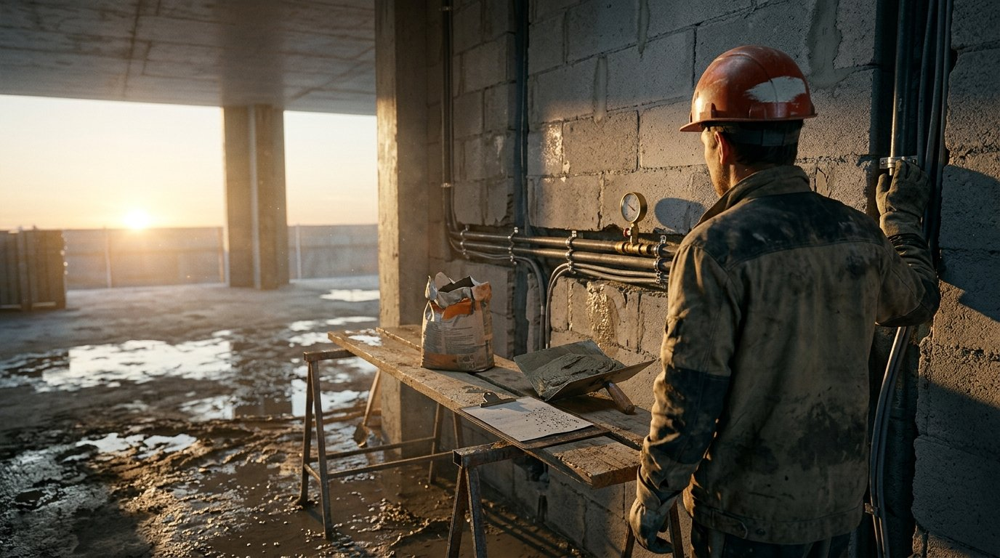
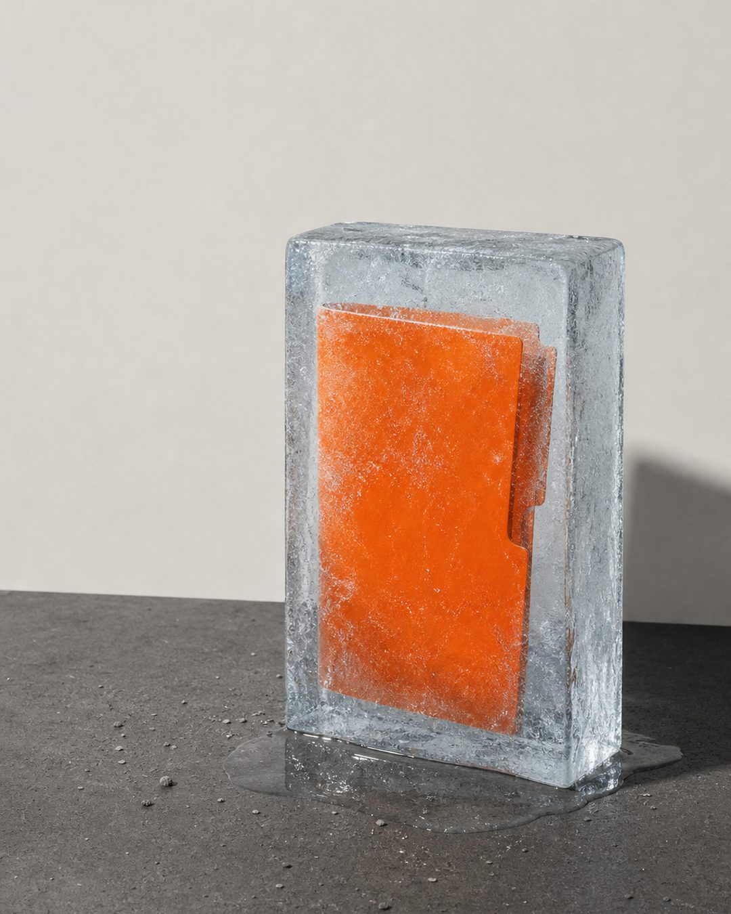
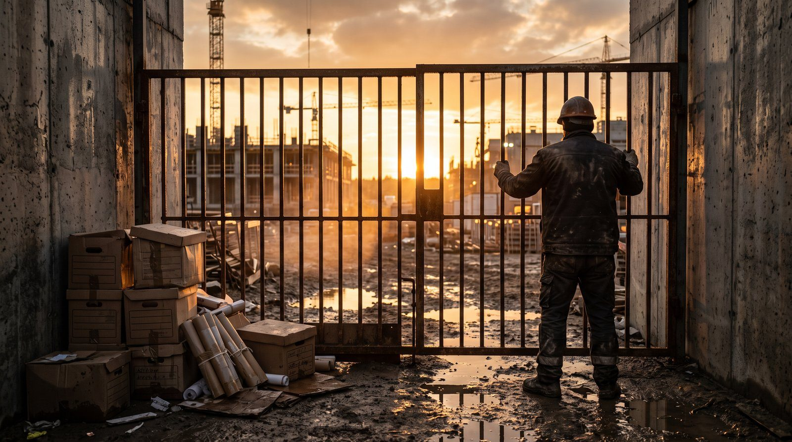
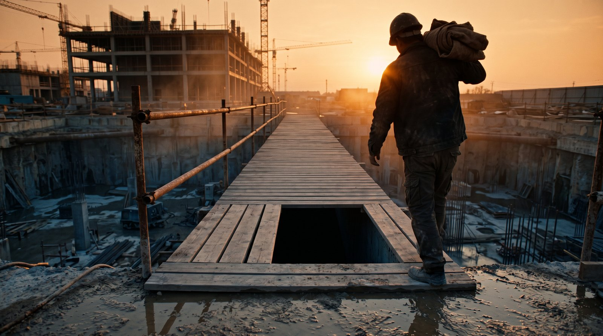
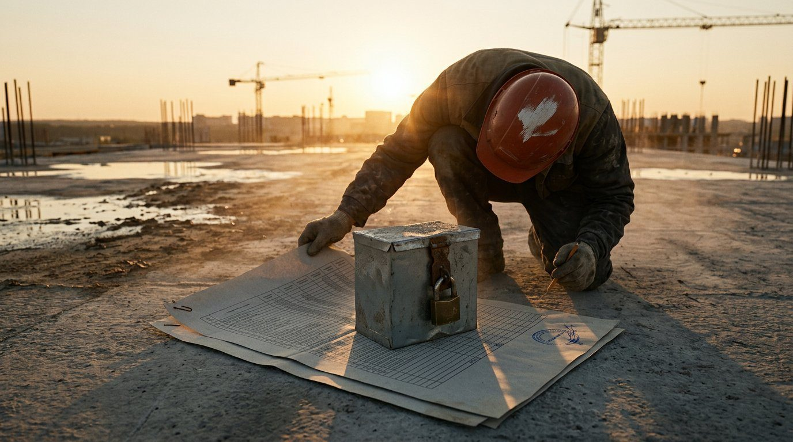

ВИТРИНА ЭКСПЕРТИЗЫ
Деньги теряются тихо
Ситуации, в которых выполненный объём не превращается в оплату. Каждый материал заканчивается контрольными точками и готовыми документами.
Какие работы считаются скрытыми и когда акт обязателен
Скрытым узел делает не название в смете, а то, что ляжет сверху. Как вывести перечень по своему проекту, а не по привычке участка, и чем это отличается от списка из интернета.

Акт скрытых работ на монтаж инженерных систем
У монтажного узла два закрытия: собственное испытание и отделка смежника. Порядок «испытание — освидетельствование — закрытие» и цена его перестановки.
Дополнительные работы в строительстве: порядок оформления и оплаты
Вскрыли перекрытие — под стяжкой слой, которого нет ни в проекте, ни в ведомости объёмов. Представитель заказчика говорит: «Убирайте и усиливайте, потом оформим». Бригада.
Заказчик не оплачивает выполненные работы: что сделать до суда
Акты подписаны обеими сторонами, КС-3 согласована, срок оплаты по договору прошёл — а на счёт ничего не пришло. В трубке «на следующей неделе», в почте тишина, бригада ждёт.
Претензия за чужую коммуналку: замечания как ключ распределения долга
Долг застройщика перед УК разложили на подрядчиков «пропорционально замечаниям». Почему молчание — самый дорогой ответ.
«Всё включено в цену» стоит вам миллионы
Одна фраза превращает любой допобъём в «сопутствующую работу», за которую не платят.
Пять доказательств, которые заставят заплатить
Объём есть в бетоне, но его нет в документах. А платят по документам.

Генподрядчик зарабатывает на вас больше, чем на стройке
384 млн ₽ чужих денег под 0% годовых. Вы — его банк, только без процентов.
Подписанная КС-2 не значит, что вам заплатят
4 ловушки в договоре, которые превращают ваш долг в бессрочный. И суд это подтвердит.
Аванс — это не деньги. Это крючок
Почему опытные субподрядчики сознательно отказываются от аванса. Реальная история.
Банкротство планируется за год до вашего первого акта
5 маркеров из открытых источников, которые видны ДО подписания договора.
Скидка 15% на тендере — это отбор жертв
Вы не выиграли тендер. Вас выбрали. Механика конвейера субподрядчиков.
Сделали сейчас. Оформлять никто не спешит
Как зафиксировать поручение, объём, цену и срок.
Работы готовы. Выручка пока нет
Как собрать доказуемую хронологию.
Проверка КС-2 перед сдачей
Четыре прохода по комплекту глазами заказчика — до того, как он его увидит.
Акт скрытых работ: образец и причины возврата
Из чего состоит документ, кто подписывает и почему его нельзя оформить задним числом.

Акт освидетельствования: кто подписывает и что прикладывается
Состав участников, приложения и связка с общим журналом работ.

Исполнительная документация: состав и порядок передачи
Что заворачивает ПТО чаще всего и как комплект связан с оплатой по КС-2.
Смета сошлась. Маржи нет
Накладные, объёмы, материалы, транспорт, зима и непредвиденные — где прибыль уходит молча.

Мусор вывезли. В смете этого нет
Из чего складывается обращение с отходами и кто платит за превышение объёма.
Договор субподряда: разделы, от которых зависит оплата
Предмет, цена, порядок расчётов, приёмка, расторжение — что в каждом решает вопрос об оплате.

Опасный пункт не выглядит опасным
Семь формулировок, на которых нужно остановиться, и чем заменить каждую.
Договорились устно. Действует текст
Что это за документ, как оформляется и что делать, если его игнорируют.
Ваши деньги лежат у другого
Зачем удержание генподрядчику, во что обходится вам и что должно быть в договоре.
Срок прошёл. О вас не вспомнили
Расчёт суммы, подтверждение события, напоминание, требование, претензия.
Событие есть. Даты нет
От какого события считается возврат и почему это главный источник споров.

Удержание в КС-2 и КС-3
Где ему место в формах и как проверить, что удержали ровно столько, сколько позволяет договор.
Реестр требований кредиторов
Акты подписаны, долг признан, а генподрядчик в банкротстве. Почему «претензия — иск» здесь не работает и что теряет тот, кто не попал в реестр.
Написал управляющему — не значит заявил
Требование включает суд определением, а не переписка. Что подаётся, чем подтверждается и что происходит после подачи.
Срок есть. Числа не будет
Почему точка отсчёта — публикация, а не письмо и не звонок, и что делать, если срок уже пропущен.
Образец не спасает
Что в заявлении обязано быть, почему долг и санкции разделяются и что проверить до подачи.
Что у него спрашивать
Управляющий действует в интересах процедуры, а не вашего требования. Что запрашивать имеет смысл и на что вы вправе.
Работа начинается на ваши деньги
Пункт про аванс называет размер и молчит про срок, порядок погашения и право остановиться. Что стоит каждое пропущенное слово.
Требуют всю сумму
Возврату подлежит разница между полученным авансом и тем, что им закрыто. Из чего складывается расчёт и кто что доказывает.

Требование пришло. Что сегодня
Три действия в тот же день, шесть соблазнов с последствиями и четыре развилки ответа.
Платит подрядчик, защищает генподрядчика
Гарантия выглядит формальностью при подписании и оказывается расходом, который никто не считал. Ставка годовая — значит цену двигает срок.

Акт передачи строительной площадки: образец и замечания
Что должно быть в акте, как записать замечания к неготовому фронту и с какой даты начинают течь ваши сроки.
ЗОС в строительстве: что значит отказ для ваших денег
Кто выдаёт заключение о соответствии, почему отказывают и что делать, когда расчёт, удержание и эскроу привязаны к вводу дома.

Переуступка ДДУ вместо денег за работы
Как пустой эскроу превращает «оплату квартирой» в долг за неё и шесть проверок до подписи.